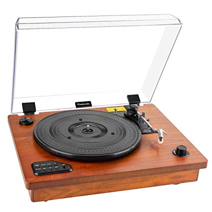

Editor: Student 1

Personal Details
Name:
Sean Cassiere
Email:
Identification
University of Westminster:
W1715755
Informatics Institute of Technology:
2016074
A phonograph record (also known as a gramophone record, especially in British English, or record) is an analog sound storage medium in the form of a flat disc with an inscribed, modulated spiral groove. The groove usually starts near the periphery and ends near the center of the disc. At first, the discs were commonly made from shellac; starting in the 1950s polyvinyl chloride became common. In recent decades, records have sometimes been called vinyl records, or simply vinyl.

The phonograph disc record was the primary medium used for music reproduction throughout the 20th century. It had co-existed with the phonograph cylinder from the late 1880s and had effectively superseded it by around 1912. Records retained the largest market share even when new formats such as the compact cassette were mass-marketed. By the 1980s, digital media, in the form of the compact disc, had gained a larger market share, and the vinyl record left the mainstream in 1991. Since the 1990s, records continue to be manufactured and sold on a smaller scale, and are especially used by disc jockeys (DJs) and released by artists in mostly dance music genres, and listened to by a growing niche market of audiophiles. The phonograph record has made a notable niche resurgence in the early 21st century – 9.2 million records were sold in the U.S. in 2014, a 260% increase since 2009. Likewise, in the UK sales have increased five-fold from 2009 to 2014.
Name:
Sean Cassiere
Email:
University of Westminster:
W1715755
Informatics Institute of Technology:
2016074